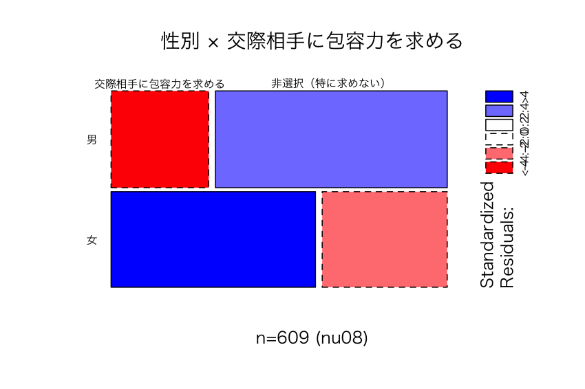
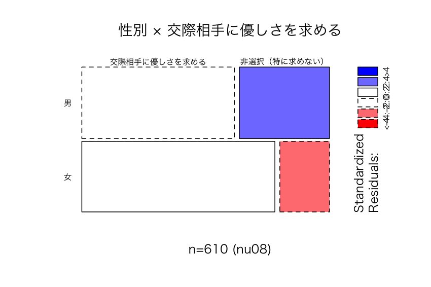

| 項目 | 内容 |
|---|---|
| 調査テーマ | 友人・恋愛関係 |
| 実施時期 | 2008年 |
| 対象 | 母集団が不明 |
| 主に、たまたま協力が得られた学生・桜麗祭来場者 | |
| 調査方法 | 質問紙法・自記式調査法 |
| 標本サイズ | n=610 |
| 環境 | R |
図1: 学生意識調査2008 nu08
仮定
仮説
帰無仮説においては母比率に差がないので、母比率の差 = 0
以上を数式で表すと…
分母に含まれる \(se_0\) （差の標準誤差）は
上式中の \(\hat{p}\) （プールした比率）は
まとめると
交際相手に 包容力 を求める比率に、男女差があるか
仮説
性別×交際相手に包容力を求める
| 交際相手に包容力を求める | 非選択（特に求めない） | Sum | |
|---|---|---|---|
| 男 | 91 | 216 | 307 |
| 女 | 188 | 115 | 303 |

図2: 性別×交際相手に包容力を求める (nu08)
| 交際相手に包容力を求める | 非選択（特に求めない） | 合計 | |
|---|---|---|---|
| 男 | 91 | 216 | 307 |
| 女 | 188 | 115 | 303 |
| 交際相手に包容力を求める | 非選択（特に求めない） | 合計 | |
|---|---|---|---|
| 男 | \(\hat{p}_1 = 0.3\) | 0.7 | 1 |
| 女 | \(\hat{p}_2 = 0.62\) | 0.38 | 1 |
| 交際相手に包容力を求める | 非選択（特に求めない） | 合計 | |
|---|---|---|---|
| 男 | 91 | 216 | \(n_1 = 307\) |
| 女 | 188 | 115 | \(n_2 = 303\) |
| 合計 | 279 | 331 | 610 |
結論
交際相手に 優しさ を求める比率に、男女差があるか
仮説
性別×交際相手に 優しさ を求める
| 交際相手に優しさを求める | 非選択（特に求めない） | Sum | |
|---|---|---|---|
| 男 | 193 | 114 | 307 |
| 女 | 241 | 62 | 303 |

図3: 性別×交際相手に優しさを求める (nu08)
同様に、二群の比率の検定をやってみよう
交際相手に 経済力 を求める比率に、男女差があるか
仮説
性別×交際相手に 経済力 を求める
| 交際相手に経済力を求める | 非選択（特に求めない） | Sum | |
|---|---|---|---|
| 男 | 23 | 283 | 306 |
| 女 | 83 | 220 | 303 |
図4: 性別×交際相手に経済力を求める (nu08)
同様に、二群の比率の検定がやってみよう
結論